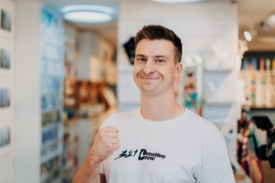

Projektový manažer v B2B

Deset let působím jako projektový manažer v B2B prostředí, kde vedu projekty a týmy od první obchodní schůzky až po předání hotového díla a zpracování reference. Jde především o propagační firemní a produktová videa pro klienty z průmyslu a B2B sektoru.
Po této dekádě uvažuji o změně a zaujala mě volná pozice Projektového manažera pro B2B REALIZACE POLEPŮ A BRANDINGOVÝCH INSTALACÍ. Taky proto, že jsem z Blanska a značku Polepim registruji od jejích začátků. Líbí se mi její dosavadní cesta i potenciál do budoucna.
Proto podle mě stojí za to zjistit, jestli si můžeme vzájemně pomoct dál růst.
Zakázky si samostatně vyhledávám, sjednávám a uzavírám. Mým cílem není prodat za každou cenu, ale skutečně přinést hodnotu a výsledky klientovi. Vždy skutečně poslouchám, protože to, co klient na začátku poptává, není vždycky to, co skutečně potřebuje.
Vedu kompletní realizaci od A do Z. Jsem prostředníkem mezi klientem a naší firmou. Sestavím tým, rozdělím úkoly a zodpovědnosti, dohlížím na plnění a poskytuji podporu. Komunikuji s klientem, reaguji na aktuální situaci.
Na každém natáčení jsem osobně. Snažím se kolegům připravit takové podmínky, aby mohli podat 100% výkon. Klient ocení, že jsem pro něj kontaktní bod po celou dobu spolupráce.
Hotové dílo předávám klientovi a nesu za něj zodpovědnost. Sbírám zpětnou vazbu a zpracovávám podklady pro tvorbu reference.
Stojím si za tím, že přístup je stejně důležitý jako výstup a služba okolo produktu utváří celkový klientský zážitek.
Proto se snažím, aby byl klient po celou dobu spolupráce informovaný, znal aktuální stav zakázky a aby si kromě kvalitního výstupu odnesl i pohodovou zkušenost.
Realizační tým aktuálně sestavuji individuálně pro každý projekt a vytvářím mu takové podmínky, aby mohl podat maximální výkon. Jasně rozdělím kompetence a úkoly a očekávám jejich perfektní plnění. Zároveň jsem ale k dispozici a k podpoře.
Mám zkušenost se zakázkami napříč spektrem od globálních značek po malé manufaktury. Mezi mé klienty patří ABB, Bosch Rexroth, Fanuc, Le&Co, Sanela a spousta dalších.
Nedělám rozdíl mezi malým a velkým klientem, vždy se snažím kombinovat profesionální přístup s lidskostí a nadhledem.
Sehraná akce od první minuty – jasně rozdělené role, přímá komunikace bez šumu a skvělá schopnost adaptace přímo v terénu výroby. Inspirativní ukázka toho, jak může vypadat opravdu efektivní spolupráce. Obrovský respekt týmu pod vedením Romana Hrušáka.
Jste Creative Crew, ale při akci takového rozsahu se kreativita moc nevítá. A to je přesně, co jako zákazník potřebuju. Perfektní příprava a domnělá lehkost v průběhu. A vy jste byli tak profesionální a přitom navíc krásně lidští.
Thank you for the great work, Roman Hrusak! Collaborating with you and your team was smooth, fun filled and productive!! In fact, the results speak for itself!
Spolupráce je velmi příjemná už od výběrového řízení a dotahování scénáře, ale tyto dny s celým Vaším týmem byly (i přes svou náročnost) opravdu zábavné a inspirující. Nemůžeme se dočkat výsledku!
Výsledkem může být, kromě vynikajícího výstupu, také dlouhodobé partnerství. Váš přístup bych označil jako long-term business. Jsem přesvědčený, že u nás vaše práce ještě neskončila.
Když něco děláme, tak s radostí. Dva dny práce na 2 minuty výsledku… díky této zkušenosti jsem začal vnímat věci úplně z jiného úhlu. Skvělá spolupráce s Romanem a jeho týmem.
Běžně využívám nástroje umělé inteligence, nejvíc: Claude, ChatGPT, Gemini, Antigravity a Typeless
Ovládám Excel a běžnou MS Office agendu.
Aktuálně pracuji v systému 321 Intra; do nového systému typu Raynet se určitě rychle zapracuji.
Dál pro práci rád užívám ekosystém Apple
Marketing a propagace je součástí mojí dosavadní každodenní praxe.
Angličtina: Angličtina na úrovni B2, projekty zvládám vést i v angličtině.
Němčina: Němčinu mám na nízké úrovni ze ZŠ, ale rád si její úroveň vylepším vhodnými kurzy.
V technických výkresech se zatím nepohybuji, ale určitě se rychle zorientuji.
Rád se dovzdělávám, chodím na přednášky a konference. Věřím, že se má člověk stále co učit.
Řidičské oprávnění sk. B a A.
To, co popisujete v inzerátu, dělám deset let, pouze v jiném médiu.
Jsem samostatný, práci a čas si rád organizuji sám a motivuje mě dotažení a úspěšné předání projektu. Rád pracuji v týmu, od kolegů čekám kvalitu a rád je podpořím, aby měli podmínky ji dodat.
Po deseti letech v jedné firmě nabírám pocit, že zraje čas na změnu a začínám se rozhlížet, kam by tahle změna mohla vést.
Nejde mi o to zalíbit se za každou cenu, zajímá mě, jestli bychom si sedli a jestli by spolupráce dávala smysl oběma stranám.
Pokud je to zajímavé i pro vás, rád se sejdu, abychom to mohli probrat osobně.